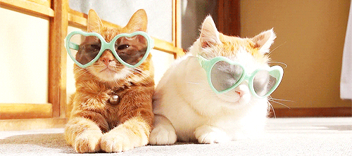

there is a myth amongst cat owners that a certain cats have common personality traits based on their
coat color. what cat color would we be, as humans? find out if you're a white, black, or orange cat, or a mix!
Do you consider yourself to be friendly/social, or shy/antisocial?

Do you consider yourself to be more affectionate or aloof/reserved?
Do you consider yourself to be energetic/playful or calm/lazy?
Do you tend to be intuitive (have a natural understanding) or nonintuitive?